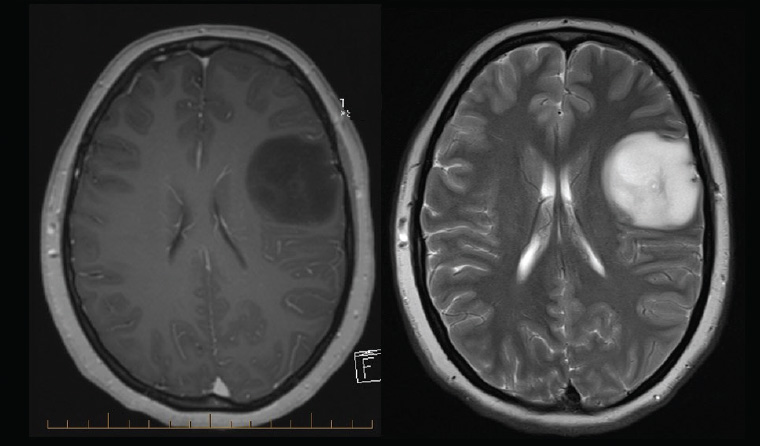
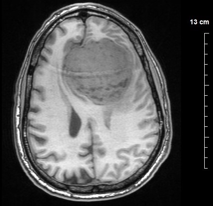
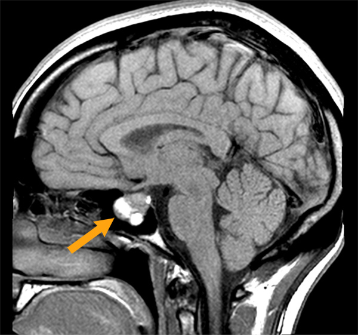

Brain Tumor MRI Dataset
This set contains 7,023 images in four distinct tumor classifications: Glioma, Meningioma, Pituitary, or no tumor found. This dataset itself was compiled from
three separate Brain MRI images datasets labeled Figshare, SARTAJ, and Br35H.
Figshare Dataset
This dataset was collected from 233 patients with 3,064 T1-weighted contrast-enhanced images of the same
three diseases as our main dataset, but does not include data for non-tumorous cases.
SARTAJ Dataset
This dataset includes 3,264 images of the same four classifications used by our main dataset.
Br35H
This dataset includes 3,060 images that are separated into three folders: Yes, No, and Pred. This is to classify
for tumorous, non-tumorous, and a prediction set of images accordingly. However, the main dataset only stripped the
non-tumorous folder from this dataset for compilation.
The main Brain Tumor MRI Dataset splits it's large set into training and testing folders which each include a glioma, meningioma,
piuitary, and notumor folder carrying the correctly labeled images.
Training Set
- Glioma: 1,321 images.
- Meningioma: 1,339 images.
- Pituitary: 1,457 images.
- Non-tumorous: 1,595 images.
Testing Set
- Glioma: 300 images
- Meningioma: 306 images.
- Pituitary: 300 images.
- Non-tumorous: 405 images.
The Diseases
Glioma
This type grows inside of either the brain or the spinal cord, but does not typically spread
outside of these areas. This tumor occurs when the glial cells, which are meant to support the nerves
and aid the central nervous system, begin to grow uncontrollably.

Representation of a glioma tumor.
It has it's own three classifications.
1. Astrocytomas
Formed in the astrocyte cells in the brain stem, astrocytomas has aggressively fast growth. Astrocyte cells are crucial in the workings
of the central nervous system. Some tasks for these cells include supporting nutrients and structure to neurons, forming and maintaining synapses,
and aiding cerebral blood flow.
2. Ependymomas
Formed in the ependymocyte cells, ependymomas is capable of invading and damaging the cerebrospinal fluid. Ependymocytes are integral to
the central nervous system by production, circulation, and regulation of cerebrospinal fluid and maintenance of neural tissue.
3. Oligodendrogliomas
Formed in the oligodendrocyte cells, Oligodendrogliomas grows slowly but can become more aggressive with progression. Oligodendrocytes ensure
rapid and efficient transmission of nerve impulses, maintaining the neural network.
Meningioma
This type of tumor is the most common at 30% of all brain tumors. It originates in the outer three layers of tissue
residing between just below the skull that is meant to cover and protect the brain.

Representation of a meningioma tumor.
Meningioma is highly invasive. It can spread through the surface of the brain, the ventricular system (which can cause blockage of the flow
of cerebrospinal fluid), in the base and throughout the skull. This includes the base and area behind the eyes effecting nasal and optic nerves.
Pituitary
Formed in the pituitary gland, Pituitary tumors are typically non-cancerous and do not spread to other parts of the body. However, they can cause
harm by pressuring nearby parts of the brain and it's important nerves. In addition, this type can cause hormone changes within the patient leading to numerous symptoms.

Representation of a pituitary tumor.
It has it's own four classifications
- 1. Functioning: These tumors produce hormones.
- 2. Nonfunctioning: These tumors do not produce hormones.
- 3. Macroadenomas: The larger tumors, measuring at least 1cm.
- 4. Microadenomas: The smaller tumors, measuring less than 1cm.